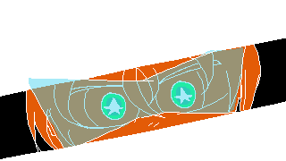

FALLA/CRITICAM
Compuse la banda sonora de FALLA/CRITICAM, un proyecto universitario creado como finalización del primer año de la carrera.

Sample
Snippet de la canción del menú de "Falla Criticam"
Me desempeño en la composición y creación de música para videojuegos.
Mis trabajos tienen raíces en composiciones, en su mayoría, de multimedia japonesa.
Compuse la banda sonora de FALLA/CRITICAM, un proyecto universitario creado como finalización del primer año de la carrera.

Snippet de la canción del menú de "Falla Criticam"